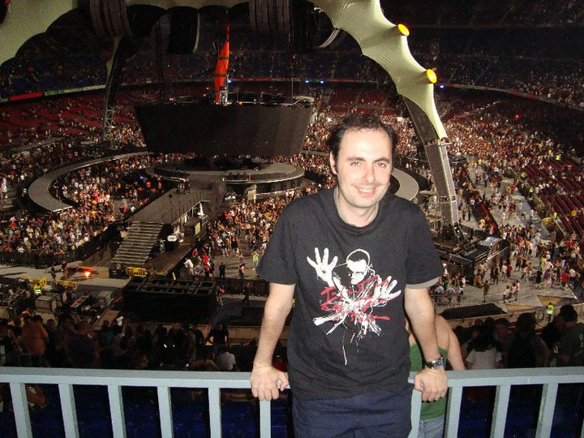

Documentación del sitio web sobre U2
Fuentes
El contenido de este sitio web sobre U2 se ha recopilado y elaborado utilizando una variedad de sitios web especializados. A continuación se presentan algunas de las fuentes utilizadas:
- Fernández, Tomás y Tamaro, Elena. «Biografia de U2». En Biografías y Vidas. La enciclopedia biográfica en línea [Internet]. Barcelona, España, 2004.
- Sitio web: https://claudiaarellanob.com/10-curiosidades-u2-43-anos-nacimiento/
Atribuciones de imágenes y multimedia
Las imágenes y otros elementos multimedia utilizados en este sitio web se han obtenido de diversas fuentes y se utilizan con permiso o bajo licencias que permiten su uso. A continuación se detallan las atribuciones de algunas de las imágenes y multimedia utilizados:
- Imagen logo U2 GROUP MUSIC creado de canvas
- Imagen logo de U2: https://wikitravel.org/de/Datei:Berlin_U2.svg usado para favicon
- Vídeos sobre U2 - © YouTube
- Imágenes para uso personal pero no comercial del sitio web: https://wall.alphacoders.com/big.php?i=659593
- Imágenes SVG obtenidas de https://pixabay.com/es/images/search/svg%20music/
- Imágenes obtenidas de https://www.flickr.com/photos/13345783@N02/1366929448/sizes/w/
- Imágenes obtenidas de https://www.flickr.com/search/?text=u2

Foto Personal. Concierto U2 (Barcelona, Camp Nou, 02-07-2009)